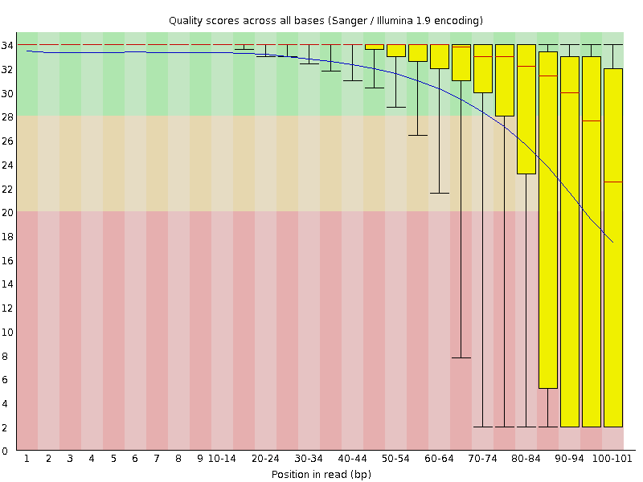
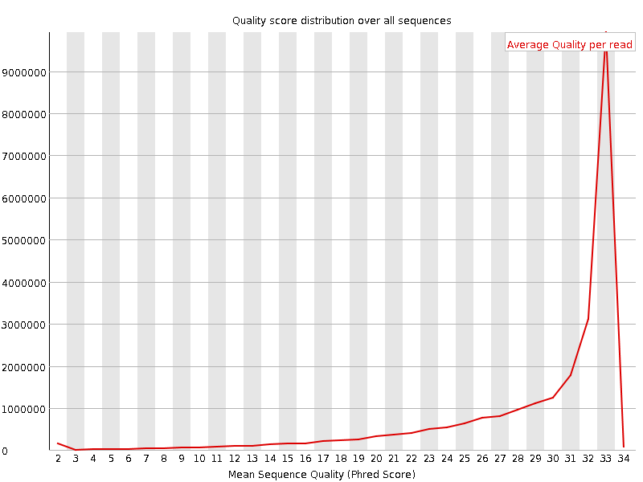
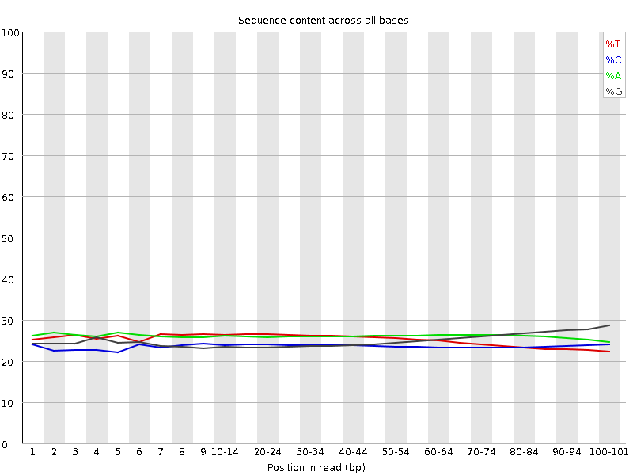
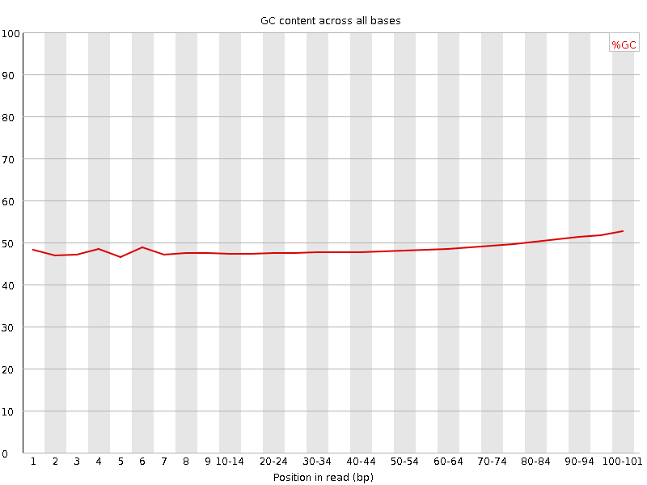
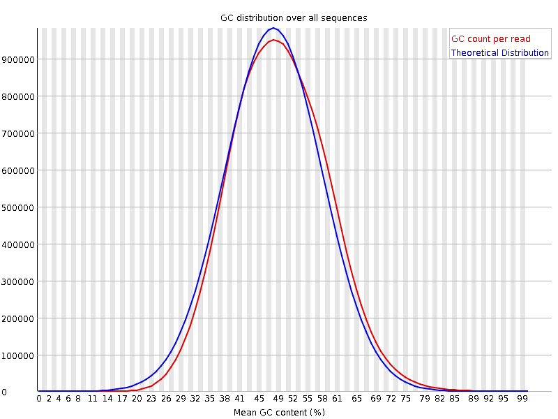
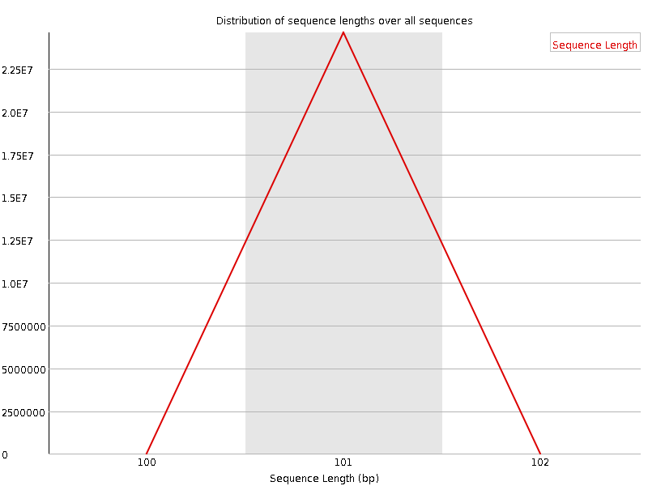
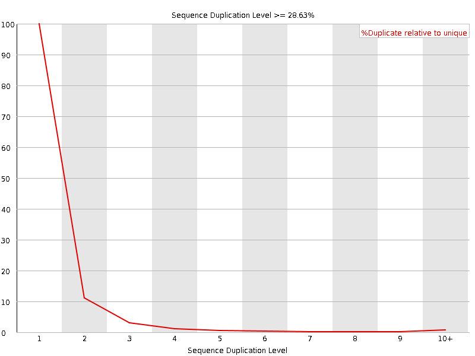
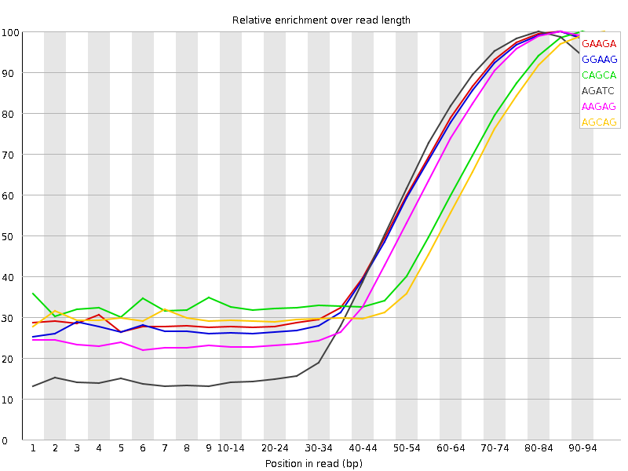

![[OK]](Icons/tick.png) Basic Statistics
Basic Statistics
| Measure | Value |
|---|---|
| Filename | ERR361059_1.fastq |
| File type | Conventional base calls |
| Encoding | Sanger / Illumina 1.9 |
| Total Sequences | 24597715 |
| Filtered Sequences | 0 |
| Sequence length | 101 |
| %GC | 48 |
![[FAIL]](Icons/error.png) Per base sequence quality
Per base sequence quality

Per sequence quality scores

Per base sequence content

Per base GC content

Per sequence GC content

Per base N content

Sequence Length Distribution

![[WARN]](Icons/warning.png) Sequence Duplication Levels
Sequence Duplication Levels

Overrepresented sequences
No overrepresented sequences
Kmer Content

| Sequence | Count | Obs/Exp Overall | Obs/Exp Max | Max Obs/Exp Position |
|---|---|---|---|---|
| GAAGA | 10903420 | 4.074607 | 6.8596497 | 85-89 |
| GGAAG | 10392205 | 4.041746 | 6.897783 | 85-89 |
| CAGCA | 8860315 | 3.8654406 | 7.0882025 | 90-94 |
| AGATC | 8661300 | 3.568376 | 6.4646783 | 80-84 |
| AAGAG | 9311805 | 3.47982 | 6.2799273 | 85-89 |
| AGCAG | 8368440 | 3.44707 | 6.6711984 | 95-97 |
| CAGGA | 8290145 | 3.414819 | 6.5182595 | 95-97 |
| AGAGC | 8229830 | 3.3899746 | 6.6043463 | 90-94 |
| GCAGG | 7890545 | 3.3826022 | 7.0698104 | 95-97 |
| TCAGC | 7432860 | 3.3754063 | 6.924301 | 95-97 |
| TTCAG | 7826745 | 3.3565185 | 6.141187 | 85-89 |
| AGGAA | 8223405 | 3.0730855 | 5.9236054 | 95-97 |
| GATCG | 6983380 | 2.994274 | 6.228954 | 85-89 |
| ATCGG | 6848280 | 2.9363472 | 6.273501 | 85-89 |
| TCGGA | 6755910 | 2.8967416 | 6.1866584 | 85-89 |
| CGGAA | 6738320 | 2.775602 | 5.9517384 | 85-89 |
| GTTCA | 6311780 | 2.7068222 | 5.559932 | 85-89 |
| ATGCC | 5906155 | 2.6820998 | 8.463917 | 95-97 |
| GGTTC | 5940415 | 2.6513255 | 5.6863217 | 90-94 |
| GAGCG | 6169815 | 2.6449416 | 6.461252 | 95-97 |
| AGCGG | 6103245 | 2.6164036 | 6.419534 | 95-97 |
| GAATG | 6089895 | 2.3689346 | 5.479169 | 95-97 |
| GCGGT | 5114530 | 2.2822857 | 5.549589 | 95-97 |
| GGAAT | 5820830 | 2.2642698 | 5.28509 | 90-94 |
| GGGGG | 5177750 | 2.181118 | 5.5310445 | 95-97 |
| CGGTT | 4811980 | 2.1476822 | 5.2913384 | 90-94 |
| AATGC | 5114095 | 2.1069598 | 5.4492517 | 95-97 |
| TGCCG | 4353265 | 2.057423 | 8.430002 | 95-97 |
| GAGAC | 4614755 | 1.9008778 | 5.210779 | 95-97 |
| AGACC | 4304590 | 1.8779396 | 5.2700315 | 95-97 |
| CCGAG | 3734065 | 1.6953915 | 5.8683014 | 95-97 |
| GCCGA | 3376425 | 1.533011 | 5.2494245 | 95-97 |
| CGAGA | 3481085 | 1.4339042 | 5.1261387 | 95-97 |
| GACCG | 2684345 | 1.2187834 | 5.1021676 | 95-97 |